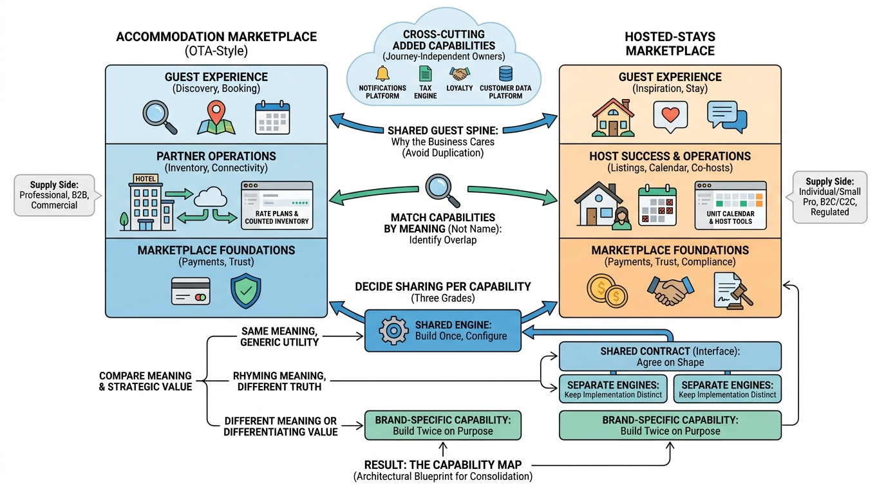

Part I — MARKETPLACE: The Business of a Night's Stay
Mapping the Business: Capability Maps for Two Marketplaces

Image generated by Google Gemini (gemini-3-pro-image-preview)
Part I — MARKETPLACE: The Business of a Night's Stay

Image generated by Google Gemini (gemini-3-pro-image-preview)